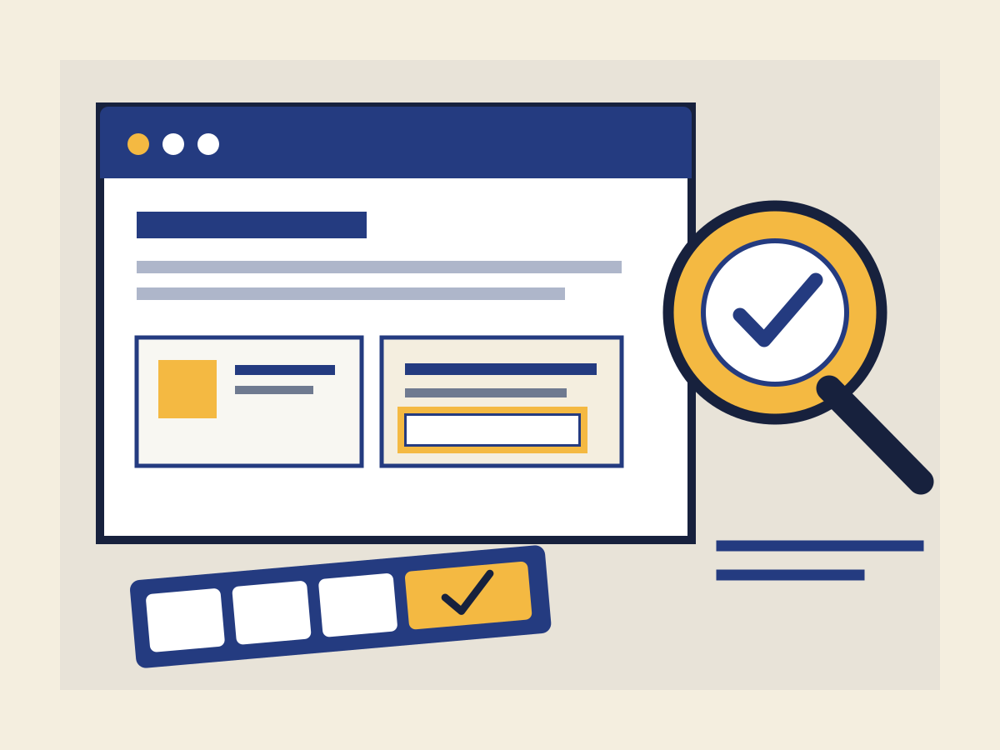

A practical web accessibility lab
Make the web
work for everyone.
A small, hands-on field guide for spotting barriers, understanding their impact, and making useful fixes.
Explore the audit checklistCERTIFICATION
Understand the impact.
Access is part
of the design.
Accessibility means people can perceive, understand, navigate, and use a digital experience in different ways. It is not a final polish pass; it is part of making a site work.
Use this demo to practice noticing barriers before they become someone else’s roadblock. Automated tools can point to clues, but people and context help explain what matters.
Read the accessibility statement
A useful first pass.
Move beyond “the tool found a problem.” Ask who is affected, where the barrier appears, and what change helps.
- 01○
Check the structure
Use headings in order and meaningful page landmarks so people can scan and jump around.
- 02○
Test without a mouse
Tab through controls, follow the focus indicator, and make sure nothing traps the keyboard.
- 03○
Give controls context
Label each form field, explain what is needed, and make errors easy to find and understand.
- 04○
Inspect color and images
Check text contrast and provide a useful text alternative when an image carries information.
Tool note WAVE can identify many common issues, but an automated scan does not establish that a site is fully accessible.
Questions worth asking.
Accessibility is a practice. Start with a question, then test your assumption.
Does a clean automated scan mean the page is accessible?
No. Automated tools catch only some barriers. Also test keyboard interaction, zoom and reflow, content clarity, and assistive-technology use where possible.
Why does keyboard access matter?
Some people navigate without a mouse, including keyboard users and people using switch devices or voice input. A visible focus indicator helps show where interaction will happen.
What makes alternative text useful?
It depends on the image’s purpose. Describe the information or function that matters in context; leave a decorative image with empty alternative text so it does not add noise.
Share one thing
you noticed.
This practice form stays in your browser. It does not send or store your information.
Labels, instructions, and helpful error messages belong together.
STATEMENT
An honest starting point.
Access Lab is a student learning demo, not a certification or a claim of full conformance. It was designed with semantic HTML, keyboard operation, visible focus, responsive text, descriptive image alternatives, and programmatic form feedback in mind.
If you find a barrier, use the feedback form above to describe the page area, the issue, and the effect on your task. The example form is local-only and will not transmit that message.
Return to the top